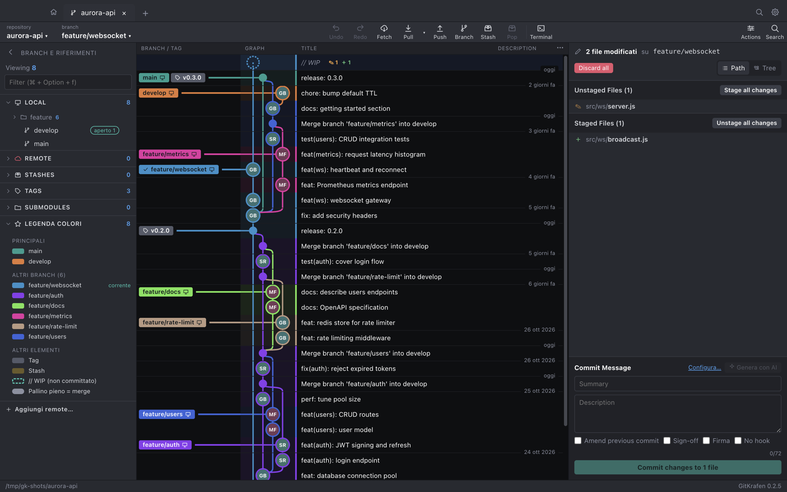

A desktop Git client modelled on GitKraken: lane-based commit graph, staging, conflict editor, integrated terminal and AI commit messages.
GitKrafen is a full-featured desktop Git client built with Electron, React and TypeScript, modelled on
GitKraken 12.x: the same tabbed layout, toolbar, side panel, lane-based commit graph with avatars, and
WIP / commit panel on the right, with the same day-to-day workflow. It is a personal project born from a
simple question — how much of a commercial Git GUI can be rebuilt on top of the plain
git command line?
The back end deliberately does not reimplement Git: every operation shells out to the system
git, so each action behaves exactly as it would in a terminal — same hooks, same config, same
results. On top of that thin layer the app adds what a GUI is good at: a virtualised graph that stays
smooth with 20,000 commits and 25 parallel branches, hunk- and line-level staging, a three-way merge
editor, drag-and-drop between branch pills, and real-time updates driven by a filesystem watcher
(about half a second, even for changes made outside the app).
It also goes beyond the original in a few places: a permanent Launchpad home listing every repository with live status, a colour legend with high-contrast, stable branch colours (ΔE ≥ 40 between any pair), privacy-friendly avatars, and optional AI commit messages with the engine of the user's choice. A one-command script builds a signed macOS DMG, and the whole project is covered by a Vitest suite that runs against real temporary repositories.
// WIP row and day
separators; click a branch to highlight all of its commits and dim the rest.--no-ff, squash), rebase, interactive
rebase (pick / reword / squash / fixup / drop), cherry-pick, revert, reset, range squash, reword of
non-HEAD commits, Undo/Redo, and drag & drop between branch pills.git merge-file --diff3, per-block resolution, editable output and
handling of modify/delete and binary conflicts.node-pty + xterm.js) with login
shell, colours, less/vim and synchronised resizing.Desktop shell: window and menus, IPC, the system git service, encrypted secrets in the
keychain, OAuth loopback flows and the pty bridge for the integrated terminal.
The whole interface — virtualised commit graph, diff and merge views, Launchpad, dialogs and command palette — built with React 18 and bundled with Vite.
Strictly typed renderer, including pure, well-tested modules for graph layout, diff/patch building and conflict parsing.
Every repository operation runs through the system git, so behaviour, hooks and
configuration are identical to the command line.